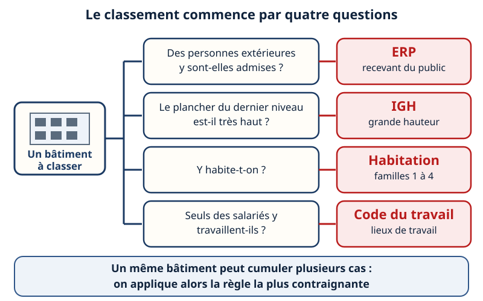
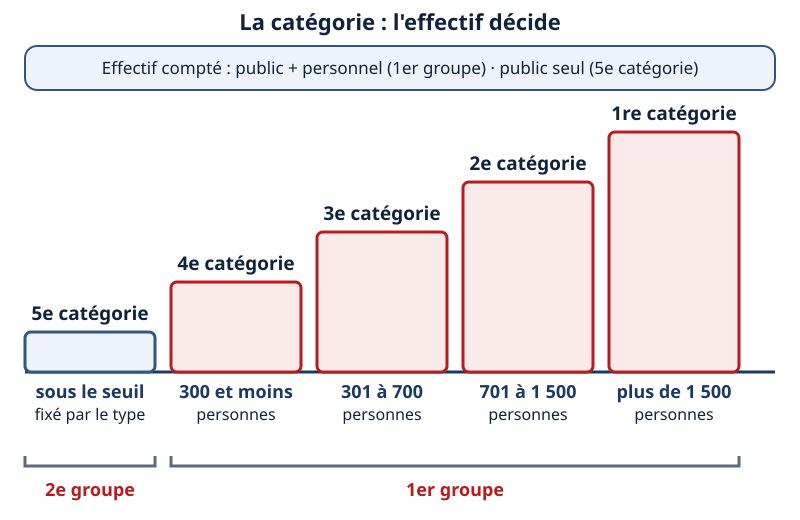
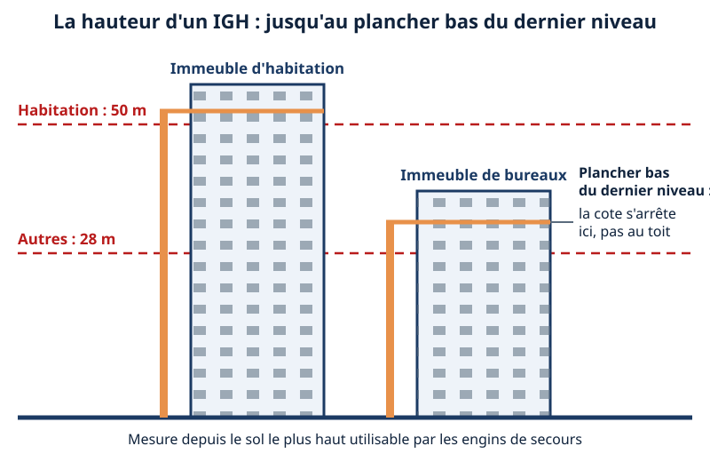
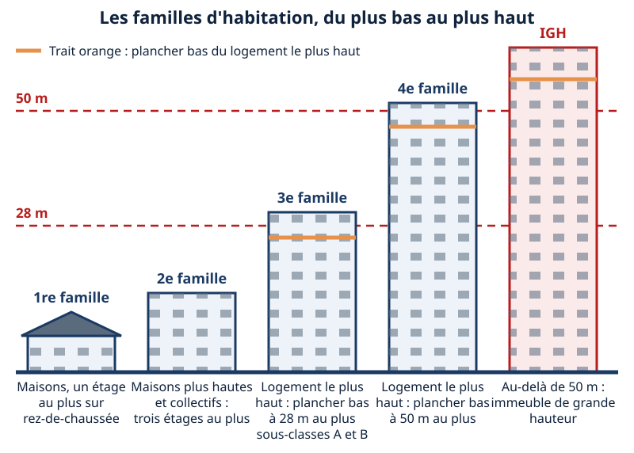
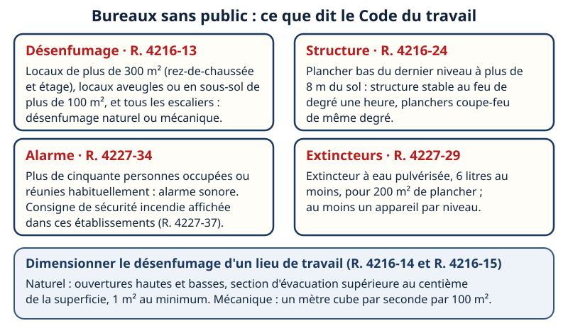
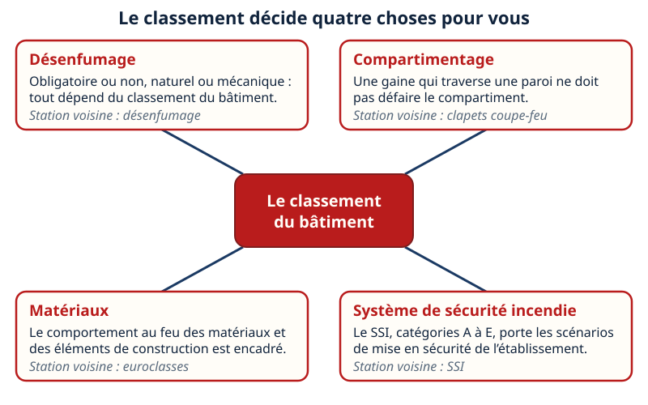
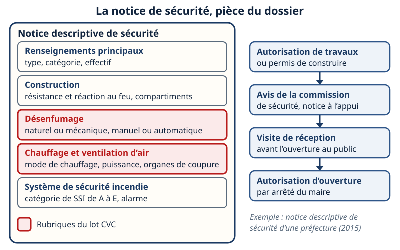
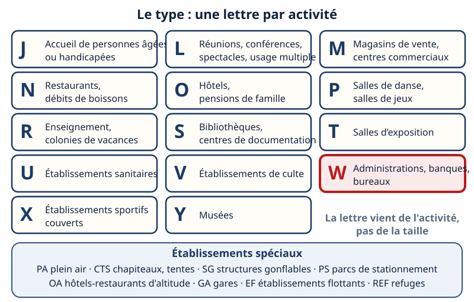

ERP · IGH · habitation · Mini-station commentée · 8 écrans et 4 questions · environ 10 minutes
Objectif
À la fin de la station, vous savez dire pourquoi on classe un bâtiment, distinguer ERP, IGH, habitation et lieu de travail, lire le type et la catégorie d'un ERP, appliquer la définition de la hauteur d'un IGH, situer une habitation dans ses familles, et expliquer ce que ce classement change pour le lot CVC et pour la notice de sécurité du permis.
Référentiel : TP TECVC, REAC TP-00133 — CP7 (ventilation tertiaire : désenfumage, compartimentage, obligations d'un bâtiment tertiaire) et CP1 (plans d'implantation : secteurs, compartiments et dégagements imposés par le classement).
Chaque écran peut être expliqué à voix haute : le bouton « Écouter » commente ce que vous voyez. Rien n'est dit qui ne soit aussi écrit.
1 / 12
Écran 1 sur 8
Pourquoi on classe : quatre questions, quatre régimes
Le risque d'incendie ne dépend pas seulement du bâtiment : il dépend de qui s'y trouve, de combien de personnes et de la hauteur à laquelle il faut aller les chercher. Pour les établissements recevant du public, le code le dit ainsi : les mesures de prévention se déterminent selon la nature de l'exploitation, les dimensions des locaux, le mode de construction, le nombre de personnes admissibles et leur aptitude à se soustraire aux effets d'un incendie (Code de la construction et de l'habitation, art. R. 143-3).
ERP (établissement recevant du public) : tout bâtiment où des personnes sont admises, librement ou non (R. 143-2) ;
IGH (immeuble de grande hauteur) : défini par la hauteur du dernier plancher (R. 146-3) ;
habitation : arrêté du 31 janvier 1986, classée en familles ;
lieu de travail : Code du travail, art. R. 4216-* (conception ; abrogés à compter du 1er janvier 2027, voir l'écran 6) et R. 4227-* (utilisation).
Un même bâtiment peut cumuler plusieurs cas : l'employeur applique tous les textes et retient les solutions les plus contraignantes (INRS). Le Code du travail ne fait pas obstacle aux règles plus contraignantes des ERP et de l'habitation, et son chapitre ne s'applique pas aux IGH (R. 4216-1, R. 4227-1).

Quatre questions dans l'ordre : chacune ouvre un régime.
Écran 2 sur 8
ERP : le type, donné par l'activité
Un ERP est tout bâtiment, local ou enceinte où des personnes sont admises, librement ou moyennant une rétribution, ou où se tiennent des réunions ouvertes à tout venant ou sur invitation (R. 143-2). Les établissements sont répartis en types selon la nature de leur exploitation (R. 143-18 ; règlement de sécurité, arrêté du 25 juin 1980, articles GN 1 à GN 3) : une lettre par activité.
Pour un technicien d'études, la lettre à connaître est W : administrations, banques, bureaux. Les autres types courants du tertiaire sont M (magasins), N (restaurants), O (hôtels), R (enseignement) et U (sanitaire). Les établissements spéciaux (PA, CTS, SG, PS, OA, GA, EF, REF) ont leur propre liste.
Le type détermine les dispositions particulières qui s'ajoutent aux règles communes à tous les ERP (R. 143-18).
Cherchez la tuile rouge : W, administrations, banques, bureaux.
Écran 3 sur 8
ERP : la catégorie, donnée par l'effectif
Quel que soit leur type, les ERP sont classés en catégories d'après l'effectif du public et du personnel (R. 143-19) :
1re catégorie : au-dessus de 1 500 personnes ;
2e catégorie : de 701 à 1 500 personnes ;
3e catégorie : de 301 à 700 personnes ;
4e catégorie : 300 personnes et au-dessous ;
5e catégorie : effectif du public inférieur au minimum fixé pour le type d'établissement (R. 143-14).
Deux groupes : le 1er groupe (catégories 1 à 4, où l'effectif compte le public et le personnel) et le 2e groupe (5e catégorie, où seul le public compte). Le seuil de 5e catégorie dépend du type : il se lit dans les dispositions particulières du type.

Les colonnes grandissent avec l'effectif. La 5e est à part.
Écran 4 sur 8
IGH : une seule mesure, la hauteur
Un immeuble de grande hauteur est tout corps de bâtiment dont le plancher bas du dernier niveau est situé, par rapport au niveau du sol le plus haut utilisable pour les engins des services publics de secours et de lutte contre l'incendie, à plus de 50 mètres pour les immeubles à usage d'habitation et à plus de 28 mètres pour tous les autres immeubles (R. 146-3).
On mesure jusqu'au plancher bas du dernier niveau, pas jusqu'au toit. Les IGH sont ensuite classés par destination : GHA (habitation), GHO (hôtel), GHR (enseignement), GHS (dépôt d'archives), GHTC (tour de contrôle), GHU (sanitaire), GHW (bureaux), GHZ, et ITGH pour les immeubles de très grande hauteur (R. 146-4). Un arrêté conjoint fixe leur règlement de sécurité (R. 146-5).
Un IGH suit son propre règlement : le Code du travail écarte ces immeubles de son chapitre, et la réglementation incendie des IGH s'impose à celle du Code du travail (INRS).

La barre orange s'arrête au plancher bas du dernier niveau.
Écran 5 sur 8
Habitation : quatre familles, classées par la hauteur
Pour les bâtiments d'habitation, l'arrêté du 31 janvier 1986 relatif à la protection contre l'incendie distingue quatre familles (art. 3) :
1re famille : habitations individuelles isolées ou jumelées à un étage sur rez-de-chaussée au plus, ou de plain-pied groupées en bande ;
2e famille : habitations individuelles plus hautes, et habitations collectives d'au plus trois étages sur rez-de-chaussée ;
3e famille : plancher bas du logement le plus haut à 28 m au plus, avec la 3e A (sept étages au plus sur rez-de-chaussée, distance limitée entre la porte de logement et l'escalier) et la 3e B pour les autres ;
4e famille : plancher bas du niveau le plus haut à 50 m au plus.
Au-delà de 50 m, un immeuble d'habitation est un IGH (R. 146-3). Dans le schéma, les deux premières familles ne sont pas à l'échelle. Les cas particuliers de maisons groupées en bande de la 2e famille ne sont pas détaillés.

Plus le bâtiment monte, plus la famille est haute.
Écran 6 sur 8
Bureaux sans public : le Code du travail
Un lieu de travail où ne vient aucun public n'est pas un ERP : il relève du Code du travail, pour la conception (maître d'ouvrage, art. R. 4216-1 à R. 4216-34) et pour l'utilisation (employeur, art. R. 4227-1 et suivants). Le bâtiment doit permettre l'évacuation rapide, l'intervention des secours et la limitation de la propagation de l'incendie (R. 4216-2).
Attention à la date. Les articles R. 4216-1 à R. 4216-34 sont abrogés à compter du 1er janvier 2027 (décret n° 2025-1100 du 19 novembre 2025, art. 2 et 5) : pour les opérations dont la demande d'autorisation d'urbanisme est déposée à compter de cette date, ou dont les travaux débutent à compter de cette date quand il n'y a pas d'autorisation, les règles des bâtiments à usage professionnel relèvent du Code de la construction et de l'habitation (chapitre IV, articles R. 144-1 à R. 144-20). Les articles R. 4227-* (utilisation) ne sont pas visés par ce décret.
R. 4216-13 : désenfumage naturel ou mécanique pour les locaux de plus de 300 m² en rez-de-chaussée et en étage, les locaux aveugles ou en sous-sol de plus de 100 m² (lecture de l'INRS, ED 6061) et tous les escaliers ;
R. 4216-14 et R. 4216-15 : naturel, ouvertures hautes et basses de surface supérieure au centième de la superficie du local (1 m² au minimum) ; mécanique, un mètre cube par seconde par 100 m² ;
R. 4216-24 : plancher bas du dernier niveau à plus de 8 m du sol, structure stable au feu de degré une heure et planchers coupe-feu de même degré ;
R. 4227-29 et R. 4227-34 : extincteurs (6 litres d'eau pulvérisée pour 200 m², un par niveau) ; alarme sonore au-delà de cinquante personnes.
Un bureau qui reçoit du public, une agence par exemple, sort de ce cadre : c'est un ERP de type W.

Quatre seuils à connaître, et le dimensionnement du désenfumage.
Écran 7 sur 8
Ce que le classement change pour le lot CVC
Le classement ne dit pas quoi installer : il dit quel texte lire. Ce texte pèse ensuite sur quatre points du lot CVC :
Le désenfumage : obligatoire ou non, naturel ou mécanique. Dans un ERP, la notice fait renseigner circulations, escaliers, locaux techniques, réserves, salles et sous-sols (articles DF, instructions techniques 246 et 247) ;
Le compartimentage : la distribution intérieure limite la propagation du feu et des fumées par des recoupements ou des compartimentages (R. 4216-27 pour un lieu de travail). Une gaine qui traverse une paroi ne doit pas les défaire ;
Les matériaux : le comportement au feu des matériaux et des éléments de construction est classé (R. 4216-28 renvoie aux articles D. 141-1 et suivants du code de la construction et de l'habitation) ;
Le système de sécurité incendie (SSI, norme NF S 61-931, catégories A à E) et la mise en sécurité de l'établissement.
La notice d'un ERP cite en outre les articles CH et GZ pour le chauffage et la ventilation d'air.

Quatre conséquences, une station voisine pour chacune.
Écran 8 sur 8
La notice de sécurité, et le réflexe
Toute construction, tout aménagement ou toute modification d'un ERP passe par une demande d'autorisation de travaux, ou par un permis de construire accompagné du dossier spécifique aux ERP (formulaire cerfa 13824), avec l'avis d'une commission de sécurité. Le dossier comprend notamment une notice descriptive précisant les matériaux utilisés, et des plans indiquant les largeurs des passages (R. 143-22). Avant l'ouverture, une visite de réception a lieu, puis le maire autorise l'ouverture (R. 143-38 et R. 143-39).
Sur l'exemple d'une notice de préfecture (version 2015), les rubriques sont : renseignements principaux (type, catégorie, effectif) ; construction (résistance au feu, réaction au feu, secteurs, compartiments, hauteur du plancher bas du dernier niveau accessible au public) ; désenfumage ; chauffage et ventilation d'air (mode de chauffage, puissance, organes de coupure) ; SSI.
Le classement se lit dans quatre régimes : ERP, IGH, habitation, lieu de travail.
ERP : type par l'activité, catégorie par l'effectif.
IGH : plancher bas du dernier niveau à plus de 28 m (50 m pour l'habitation).
Le réflexe : obtenir le classement du bâtiment avant de dimensionner, puis le retrouver dans la notice.

Les deux rubriques rouges sont celles du lot CVC.
Question 1 sur 4
Une agence bancaire reçoit des clients. Comment est-elle classée ?

Rappel de l'écran 2 — une lettre par activité.
Question 2 sur 4
Un ERP peut accueillir 650 personnes, public et personnel compris. Sa catégorie ?
Rappel de l'écran 3 — l'effectif décide.
Question 3 sur 4
Bureaux, plancher bas du dernier niveau à 35 m : est-ce un IGH ?
Rappel de l'écran 4 — la hauteur se mesure au plancher bas du dernier niveau.
Question 4 sur 4
Un plateau de bureaux de 400 m², sans public : le désenfumage est-il obligatoire ?
Rappel de l'écran 6 — les seuils du Code du travail.
Les correspondances de la station
Désenfumage (même sous-ligne)
— les obligations et le dimensionnement que le classement déclenche.
Euroclasses (même sous-ligne)
— le comportement au feu des matériaux et des éléments de construction.
Système de sécurité incendie (même sous-ligne)
— ce que le classement impose comme SSI et comme mise en sécurité.

![Quatorze tuiles en cinq rangées, une par type d'ERP installé dans un bâtiment : J accueil de personnes âgées ou handicapées, L réunions et spectacles, M magasins et centres commerciaux, N restaurants et débits de boissons, O hôtels et pensions de famille, P danse et jeux, R enseignement, S bibliothèques, T expositions, U sanitaire, V culte, W administrations, banques et bureaux (encadrée en rouge), X sport couvert, Y musées. Une bande en bas liste les établissements spéciaux. Une note rappelle que la lettre vient de l'activité, pas de la taille.](svg/erp-types.svg)